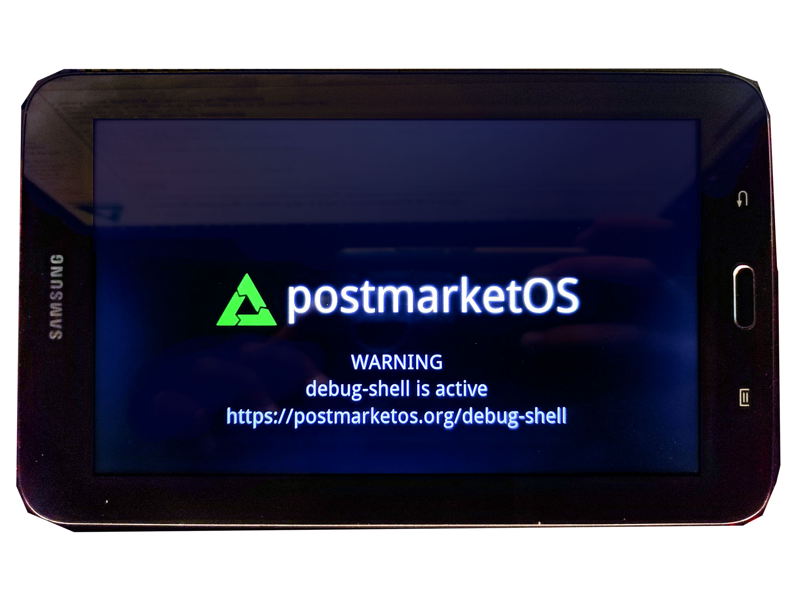

Samsung Galaxy Tab 3 Lite 7.0 (samsung-goyawifi)
|
 Samsung Galaxy Tab 3 Lite 7.0 | |
| Manufacturer | Samsung |
|---|---|
| Name | Galaxy Tab 3 Lite 7.0 |
| Codename | samsung-goyawifi |
| Released | 2014 |
| Category | testing |
| Original software | Android 4.2.2 on Linux 3.4.5 |
| Hardware | |
| Chipset | Marvell PXA986 |
| CPU | Dual-core 1.2 GHz Cortex-A9 |
| GPU | Vivante GC1000 |
| Display | 1024×600 TFT, ~170 PPI (MDPI) |
| Storage | 8GB |
| Memory | 1GB |
| Architecture | armv7 |
{kind=link}
| USB Networking |
Works
|
|---|---|
| Flashing |
Partial
|
| Touchscreen |
Works
|
| Display |
Works
|
| WiFi |
Works
|
| FDE |
Broken
|
| Mainline |
Broken
|
| Battery |
Works
|
| 3D Acceleration |
Partial
|
| Audio |
Partial
|
| Bluetooth | |
| Camera |
Partial
|
| GPS | |
| Mobile data |
Unavailable
|
| SMS |
Unavailable
|
| Calls |
Unavailable
|
| USB OTG | |
| NFC |
Unavailable
|
| Accelerometer |
Works
|
|---|---|
| Magnetometer |
Unavailable
|
| Ambient Light |
Unavailable
|
| Proximity |
Unavailable
|
| Hall Effect |
Unavailable
|
| Barometer |
Unavailable
|
| Power Sensor |
Unavailable
|
| Camera Flash | |
|---|---|
| Keyboard |
Unavailable
|
| Touchpad |
Unavailable
|
| USB-A |
Unavailable
|
| HDMI/DP |
Unavailable
|
| Ir TX |
Unavailable
|
| Ir RX | |
| Stylus | |
| Haptics | |
| Ethernet | |
| FOSS bootloader |
Broken
|
Contents
Links and development thread
Here you can get more and frequently updated information about status and downloads for this device:
Contributors
- cheadrian
Installation
The most compatible way is to use recovery zip. Make sure you have the TWRP recovery from the XDA thread for both ready-made zip or the build one.
You can navigate to the XDA thread above and download a flashable zip (faster) or you can build using pmbootstrap to get the latest version of packages (recommended).
$ pmbootstrap init
Pick the proper device according, Samsung -> Goyawifi
$ pmbootstrap install --android-recovery-zip --recovery-install-partition=external_sd
$ pmbootstrap export
$ cd /tmp/postmarketOS-export/
$ adb push pmos-samsung-goyawifi.zip /sdcard
Alternative, you can copy using MTP the zip inside tablet internal storage (/sdcard), microSD is mapped as /external_sd.
Audio
Audio should working. Configuration is it now in the pmaports.
Accelerometer
You can access accelerometer raw data from:
$cat /sys/class/sensors/accelerometer_sensor/raw_data
Calibration data:
$cat /sys/class/sensors/accelerometer_sensor/calibration
Camera
Camera seems to work now with the full resolution after unlocking the CMA limit from boot flags. The example bellow is with half resolution.
$sudo apk add v4l-utils imagemagick
$v4l2-ctl -d /dev/video0 --set-fmt-video=width=320,height=240,pixelformat=UYVY --stream-mmap --stream-count=1 --stream-to=test.raw
$convert -size 320x240 -depth 16 uyvy:test.raw test.png
3D acceleration
Hardware accelerated graphic demos, based on old Etnaviv initial work over proprietary Vivante GPU:
The kernel also integrates an old Etnaviv module I've backported, yet didn't manage to make it work with actual mesa, but it probably would work.
Related work
Can compile the kernel using Pazos kernel source using his shell script and bind pmOS generated initramfs with the kernel build with GCC 4.7.
The output to UART using MicroUSB cable with 520Kohm, 619Kohm and 150Kohm between ID and GND pins works, with the kernel config according to Command Line and serial output.